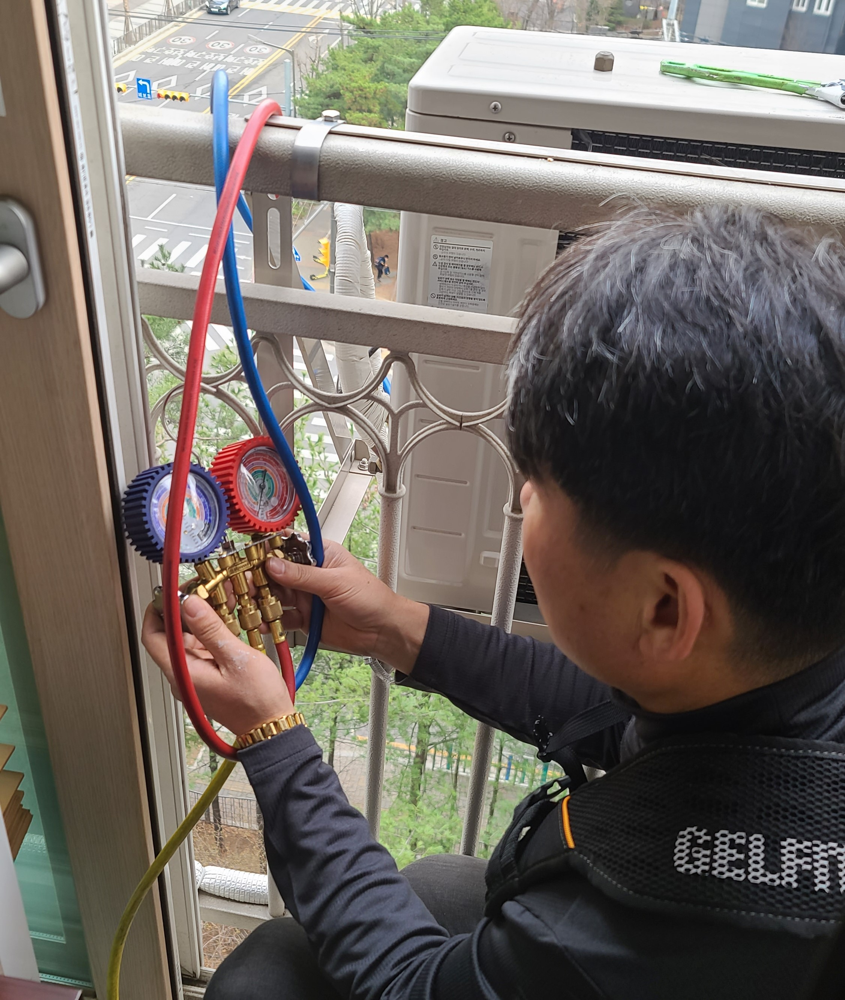

에어컨 가스충전

1. 에어컨 가스가 부족하면, 설정 온도까지 많은 시간이 소요됩니다.
그로인해 많은 시간이 소요되므로, 더 많은 전기료가 발생합니다.
그래서 전기료를 절약하기 위해 할 수 있는 방법 중 가장 적정한 방법은 가스 충전이 답입니다.
2. 절약 방법은 실외기 열관리가 중요합니다.
직사광선에 노출 되있으면 에어컨의 효율이 떨어져 많은 전기료가 발생합니다.
이때, 차광막을 실외기에 설치해 직사광선을 피하는 것도 또 하나의 방법입니다.
3. 필터 청소를 2~3주에 한번 필터 충전을 해주는 것도 또한 냉방능력을 높여주는 방법입니다.